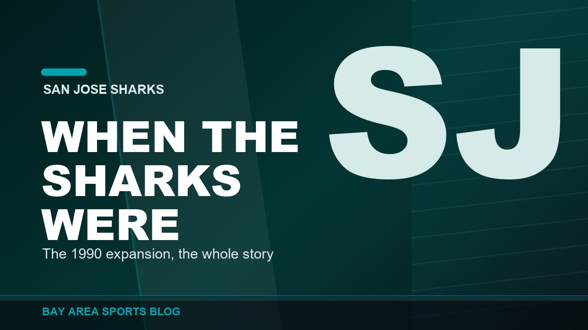
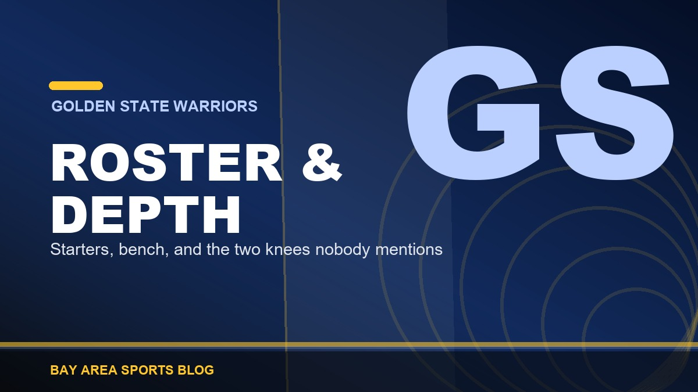
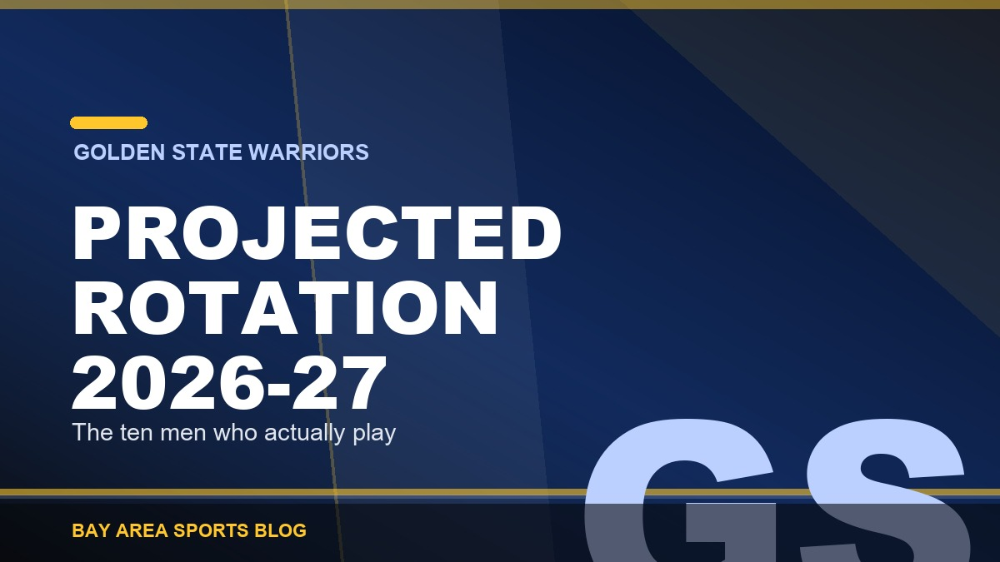
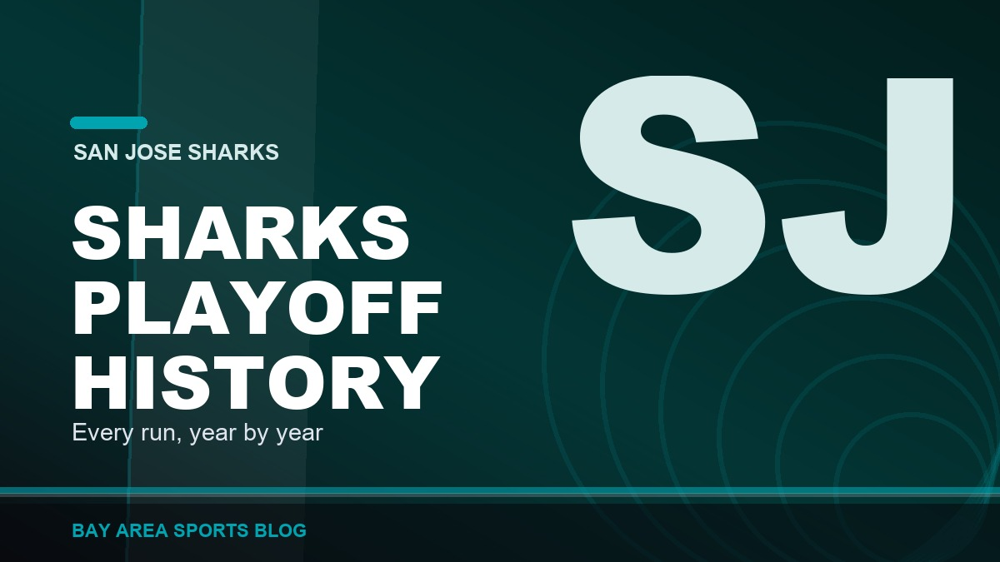

Latest Stories, page 2
Everything we have published, newest first. Opinion, recaps, history, and columns across every Bay Area team.

Bryce Eldridge Is Back, and Buddy Kennedy Is the One Who Paid for It
Eldridge came off the bereavement list Thursday and the Giants designated Buddy Kennedy for assignment to make room. Fourteen homers and a .346 on base at twenty one. Thirty games left and he is the only reason to watch.

49ers 18, Raiders 12: A Kicker Won a Football Game
49ers 18, Raiders 12 in the preseason finale. Eddy Pineiro went 6 for 6 including a 59 yarder and the defense didn't allow a touchdown.

Vitello Got Run in the First Inning on a Check Swing, and I Am Not Even Mad
Tony Vitello got tossed in the top of the first on Wednesday for yelling get it right at a check swing call on Eugenio Suarez. Fourth ejection of his rookie year as a manager, and honestly, good.

Devers Hit His 29th Homer Today and Nobody Said a Word About It
Three straight games with a home run, 29 on the year, and he leads this club in homers and RBI by a mile. Then somebody tells me he isn't a winning player.

Bryce Eldridge Is on the Bereavement List. Take the Week, Kid.
The Giants put Bryce Eldridge on the bereavement list on Monday. Nobody's said why and nobody has to. He'll be away about a week, and every other thing about this season can wait.

They Blew a Six Run Lead in the Ninth and the Game Isn't Even Over
Nine to three going to the ninth, then Eugenio Suarez hit a grand slam. The same Suarez the manager got himself ejected screaming about in the first inning. I'm done being polite about this season.

Fire Tony Vitello. The Way He Runs This Bullpen Is a Travesty.
Reds 10, Giants 9 after a six run ninth. Twenty four saves in forty four chances. The same organization ran the fourth best bullpen in baseball last year. One thing changed.

The Warriors Spent All Summer Chasing a Star and Signed Georges Niang
They chased Giannis. They chased Anthony Davis. August got late, and the fifteenth roster spot went to a 33-year-old who didn't play a game last season.

Giants 5, Reds 0: Shutout at Oracle
Two in the first, a Rafael Devers three run homer in the second, then six pitchers combined on a five hit shutout. 53-78.

Twins 9, Athletics 6: Rally Falls Short
Jeffrey Springs took his twelfth loss, Minnesota piled up sixteen hits and led 9-1, and a four run ninth got the A's within three. 51-81.

Purdy and Warner Went at Each Other in Practice, and Then Laughed About It
Warner talked. Purdy threw over his head to Deebo and screamed it right back. Then they stood there laughing. That's the whole team, right there.

Mike Evans and Purdy: The Receiver He Has Never Had
Ten straight thousand yard seasons, a six foot five catch radius, and a quarterback who has never thrown to anything like it. Here is why Niner Nation cannot stop talking about this pairing.

Jed York Got Arrested in Ohio and the 49ers Have Said Nothing
Arrested Sunday morning by a human trafficking task force, a no contest plea Monday, two misdemeanor convictions, and total silence from the team two weeks before the opener.

Red Sox 5, Giants 4: Swept at Fenway
San Francisco led 3-0 before Matt Wilkinson allowed four runs in the fourth. Boston finished the sweep. 52-78.

A's 7, Astros 6: Down Six, Somehow Alive
Down 6-0 after four, Brian Serven's homer started a six run fifth and Max Muncy won it in the seventh. 51-80.

Red Sox 3, Giants 2: Vitello Gave Away Another Ninth
Two nothing into the ninth at Fenway. Blade Tidwell threw five and two thirds scoreless, Vitello ran a spent Dylan Smith back out, and Sam Hentges gave it all back. 52-77.

A's 4, Astros 3: Win Fifty, on a Wild Pitch and a Ground Out
Jacob Lopez struck out nine in six. Medina gave it back in the seventh. Then the tying run scored on a wild pitch and the winner on a ground out. 50-80.

Raiders 22, Texans 20: The No. 1 Pick Threw a Pick Six
Raiders 22, Texans 20: Fernando Mendoza threw a pick six on his third pass and Aidan O'Connell snuck one in from a yard out with fourteen seconds left.

Guardians 5, Giants 2: Eleven Strikeouts, Series Won Anyway
Guardians 5, Giants 2: Gavin Williams struck out eleven, Willy Adames hit a 418 foot two run homer, and San Francisco still left Cleveland with the series.

Royals 6, A's 2: Swept in Four, and Seventeen of Twenty One
Royals 6, Athletics 2: Bobby Witt Jr. homered and scored three, Gage Jump gave up five runs in four innings, and Kansas City finished off a four game sweep.

49ers 41, Chargers 17: The Best Night of the Summer
49ers 41, Chargers 17 at SoFi: Jacob Cowing took a punt 83 yards, the run game piled up 146, and San Francisco led Harbaugh's Chargers 20 to 3 at the half.

Giants 1, Guardians 0: One Run Was Enough for Once
A two out Bericoto ground ball scored the only run. Houser and Dylan Smith threw seven scoreless, Smith striking out five in two. 52-74.

Royals 9, A's 7: A Five Run Lead, Gone in One Inning
They led 5-1 in the eighth and Kansas City scored seven, John Rave clearing the bases. Second blown late lead in two nights. 49-78.

When Were the San Jose Sharks Founded? The Full Origin Story
The San Jose Sharks were founded on 9 May 1990 and began play in 1991-92. The Gund brothers, the North Stars swap, the Cow Palace years and how they got the name.

Warriors Depth Chart 2026-27: Every Position, Explained
The Warriors depth chart for 2026-27: the projected starters, the bench behind them, where Jimmy Butler and Moses Moody fit, and where this roster runs out.

Warriors Projected Rotation 2026-27: Who Actually Plays
Our projected Warriors rotation for 2026-27: the ten men who play, the minutes each should get, who closes, and what changes when Jimmy Butler is back.

San Jose Sharks Playoff History: Every Run, Year by Year
The complete San Jose Sharks playoff history: all 21 postseason trips, the 1994 upset, the 2016 Stanley Cup Final, the 2019 comeback and the drought since.

Josuar Gonzalez Is the Best Giants Prospect in a Generation
A switch-hitting shortstop out of San Cristobal who walks more than he strikes out, runs like a scalded cat, and has already been ranked seventh in all of baseball. Finally, something to be excited about.

Guardians 8, Giants 1: Eldridge Homered and Nothing Else Happened
One run in Cleveland, and it was a 405 foot solo shot from a 21 year old. Jo Adell drove in six by himself. Whisenhunt gave up nine hits in four. 51-74.

Cal Basketball Schedule 2026-27: Every Game Announced
The Cal basketball schedule for 2026-27: the announced non conference games, every ACC opponent home and away, and the 2025-26 results for reference.

Cal Football Schedule 2026: Every Game, Date, Time and TV
The full Cal Golden Bears 2026 football schedule: every game, date, kickoff time and TV network, from the UCLA opener to the Big Game on 21 November.

Barry Bonds: The Loudest Bat San Francisco Ever Saw
73 home runs and four straight MVPs.

Royals 4, A's 3: A Two Run Ninth Inning Lead, Gone in Ten Minutes
A catcher interference, a bases loaded walk and a Bobby Witt Jr. single ended it. Eight innings of good pitching thrown away in front of 12,009. 49-77.

Vitello Called It Junior High Baseball. Posey Says He Is Back.
He is right about what he watched, and that is the problem. The man describing junior high baseball ran the game, and he is confirmed for next season.

McCaffrey Still Is Not Practicing, and It Might Not Be a Muscle
No injury, no explanation, and three other running backs around the league just got paid. Nick Bosa has not been out there either.

They Took Aiyuk's Locker Out. That Is How You Know It Is Over.
His stall sat empty through an entire season and nobody touched it. Now it is gone, and a franchise that never announces anything just announced everything.

Rockies 13, Giants 7: Devers Hit His 25th and It Did Not Matter
A seven to six lead going to the sixth. Then seven unanswered to the worst team in the National League, in our building, on a Sunday, in front of thirty two thousand people who paid to watch it.

Harbaugh Comes Back Thursday, and Kittle Sounds Like Himself
The 49ers are at SoFi on Thursday night against the man who dragged this franchise back to life and then got run out of the building. And the best news of the week has nothing to do with him.

Giants 7, Rockies 1: Logan Webb Is the Consummate Pro
Six innings, four hits, no walks, seven strikeouts, eighty pitches, and a six-run fourth behind him. The one man in that clubhouse who has never mailed in an August. 51-72.

The Niners Finally Have the Right Mix of Veterans and Kids
A championship core in its prime, veterans on short money, and young players who actually produce. The last few draft classes are the reason this roster finally has depth.